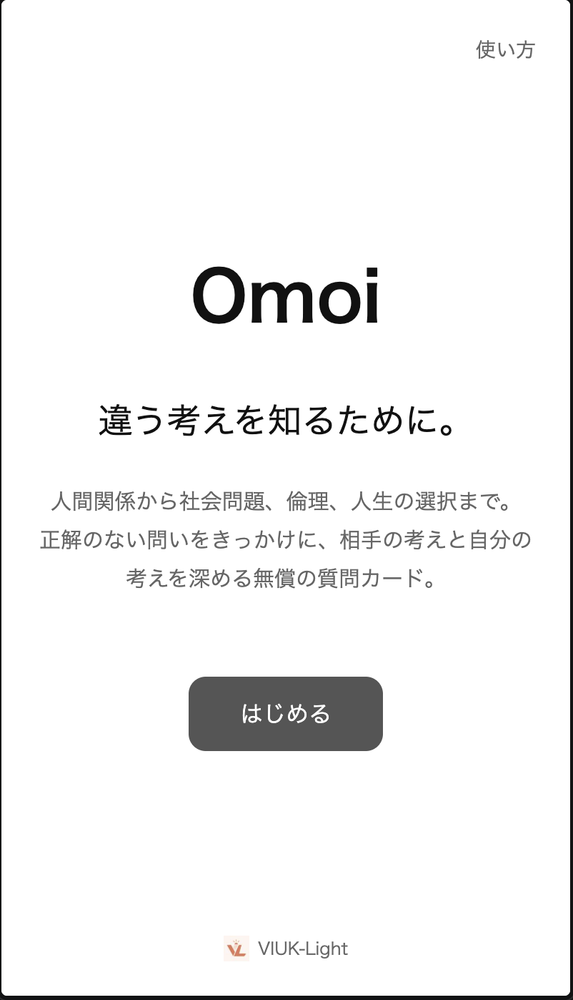

誰と使うか
友達、恋人、家族と、同じ画面を見ながら使います。一人で読むこともできます。
友達・恋人・家族
表示された質問について話します。
一人で読む場合
質問を一人で読むこともできます。
始める前に
アカウントは不要です
登録やログインは必要ありません。ブラウザで開けば使えます。
答えは入力しません
答えを入力する欄はありません。質問を読んで、その場で話します。

はじめる
開始画面の「はじめる」から進みます。
選ぶと、「どんな話をしたい？」と表示された話題カテゴリの選択画面へ移ります。
話題カテゴリを選ぶ
「日常や自分のこと」「意見が分かれる身近な話」「社会や価値観について」「人生に関わる難しい選択」から、今話したい内容を一つ選びます。
選んだら「次へ」を押します。問題数を選ぶ操作はありません。迷ったら身近なテーマから始められます。

各カテゴリと内部Levelの関係は、話題カテゴリとLevelで確認できます。
内容を確認する
「社会や価値観について」「人生に関わる難しい選択」では、質問を始める前に内容の確認画面が表示されます。読んでから「続ける」を選ぶか、「戻る」からカテゴリを選び直せます。
質問へ進む
選んだカテゴリの問いが一つずつ表示されます。場面文がある問いでは、その状況を想像しながら話します。「会話のヒント」や「問いの背景」は、用意されている問いで開けます。
詳しい操作は、質問画面を確認してください。
話したくないときは飛ばす
質問画面の「次の問いを見る」から、答えずに次へ進めます。理由を入力する必要はありません。
「前の問い」で戻ることも、「ここで終える」から途中で終了することもできます。話す長さはその場で決められます。
使い方を確認する
開始画面の右上に「使い方」があります。